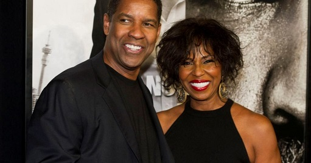

Pauletta Washington
Early Life
Pauletta Washington (née Pearson) was born on September 28, 1950. There is next-to-no information on her early life. However, we know that her sister Rita Pearson is also an actress. In 1970 the gorgeous Pauletta Pearson became the very first black participant in the Miss North contest.  She equally finished as the 1st runner-up of the competition.On June 25, 1983, Washington married Pauletta Pearson, whom he met on the set of his first screen work, the television film Wilma. The couple have four children: John David (b. July 28, 1984), a former football player with the United Football League's Sacramento Mountain Lions (and before that, college football at Morehouse); Katia (b. November 27, 1986) who graduated from Yale University with a Bachelor of Arts in 2010; and twins Olivia and Malcolm (b. April 10, 1991). Malcolm graduated from the University of Pennsylvania with a degree in film studies, and Olivia played a role in Lee Daniels's film The Butler. Like all couple they have had their fair share of infidelity and divorce.
Acting Career
As an actress, Pauletta Washington’s earlier works include Wilma (1977) and the 1981 Telefilm Purlie. She is also known for her performances on Beloved (1998), Antwone Fisher (2002), 90 Days (2016) and Steps (2017). Her work on the small screen is equally as impressive as that of the big screen. From 2002 t0 2004, she played the role of Terri Angelou on the sitcom The Parkers. In 2017, she also played the role of Miss Ella Chisholm on the Netflix comedy series She’s Gotta Have It.
As we all know, Pauletta is married to famous Hollywood actor Denzel Washington. The duo met on a movie set way back in 1977. It is unclear how long their courtship lasted, however, reports have it that Denzel Washington asked Pauletta to marry him three times. That’s a whole lot of persistence. Eventually, his persistence paid off as Pauletta finally agreed to become Mrs Washington. The duo tied the knot on June 25, 1983. Their union has effectively weathered the storms of regular Hollywood marriages and has continued to wax strong. In 1995, Denzel and Pauletta renewed their wedding vows in South Africa with Archbishop Desmond Tutu officiating. Over the years their union has been tested with rumors about divorce, pictures of Danzel Washington with another woman leading people to believe that Danzel And Pauletta are heading for divorce. The couple denied all rumors and also said that marriage can be alot of work. Danzel said "you have to work at it". Danzel also wrote to Reddit AMA "Not give up on each other. It's a commitment. It's not all the honeymoon, it doesn't last forever, so you work at it. And hopefully you're good friends first, that might help!"
John David Washington
John David Washington (born July 28, 1984) is an American actor and former American football running back. He played college football at Morehouse and signed with the St. Louis Rams as an undrafted free agent in 2006. He has had roles in the HBO comedy series Ballers and in Spike Lee's 2018 film BlacKkKlansman, the latter of which earned him both Golden Globe and Screen Actors Guild Award nominations.
Washington was raised in the Toluca Lake neighborhood of Los Angeles, California, the son of actor Denzel Washington and actress and singer Pauletta Washington (née Pearson); he is the oldest of their four children. At the age of seven, he appeared as a student in a Harlem classroom in Spike Lee's 1992 feature film Malcolm X, which starred Washington's father in the title role. Washington attended Campbell Hall School in Los Angeles, where he was a letterman in football, basketball, and track. He graduated from Campbell Hall School in 2002.
College
At Morehouse College, Washington set a school record with 1,198 yards with a 5.6-yard average and nine touchdowns, and added ten receptions for 69 yards his senior year. He also holds the school's single-game (242 yards) and career (3,699 yards) leading rushing records. Washington led the conference in rushing in 2005.
Football Career
After going undrafted in the 2006 NFL Draft, Washington was signed by the St. Louis Rams on May 1, 2006 as an undrafted free agent. Washington was released by the Rams on August 31. Three days later, the Rams re-signed him to their practice squad. Washington played in NFL Europe for the Rhein Fire in the 2007 offseason. Washington was drafted by the California Redwoods (later the Sacramento Mountain Lions) of the United Football League in the UFL Premiere Season Draft in 2009. He signed with the team on August 18. Washington stayed with the team after that and returned for his fourth season with the Mountain Lions in 2012, until the league abruptly folded that October.
Acting
He returned to acting in 2015, in the role of Ricky Jerret in the HBO comedy series Ballers. The series was well received by critics,[9] and has continued on for four seasons, as of 2018. In September 2017, Washington was cast in the lead role of detective Ron Stallworth, in Spike Lee's thriller BlacKkKlansman, based on Stallworth's memoir. The film competed for the Palme d'Or at the 2018 Cannes Film Festival, where it premiered on May 14. It did not win the Palme d'Or, but was awarded the Grand Prix by the festival jury. The film began a U.S. theatrical release on August 10, 2018, a date chosen to coincide with the one year anniversary of the Charlottesville rally.[13] The film was a commercial success, and earned Washington both Golden Globe and Screen Actors Guild Award nomination. In 2018, Washington also starred in the films Monsters and Men and Monster, both of which screened in the U.S. Dramatic Competition section at the 2018 Sundance Film Festival. He also appears in The Old Man & the Gun, opposite Robert Redford, Casey Affleck, Danny Glover, Tika Sumpter, Tom Waits, and Sissy Spacek, which was released on September 28, 2018, by Fox Searchlight Pictures.
Olivia Washington
The actress Olivia Washington was born on April 10, 1991, in the United States of America. Born to the famous Hollywood parents, Denzel and Pauletta Washington, she spent a very lavish and happy childhood. Raised along with her siblings John David Washington, her twin Malcolm Washington and Katia Washington, she grew up in the United States of America. She is also the only granddaughter of Lennis Washington. Olivia is also the niece of Rita Pearson
Education
While still attending her school, she performed in various performances. While influenced by her parents, she showed her talents in her early years. After completing her high school education, she attended the New York University. After graduating from there, she took acting lessons in the Acting School. There, she interpreted her love for acting and dancing by performing in several performances. Because she impressed many by the time she left the acting school, she was seen on screen with minor performances in small scale productions.
Acting Career
She is also widely famous for her portrayal in the films The Butler and Sorry for Your Loss. Because of her parents, she aspired to be an actress at an early age. In 2013, she debuted with the film The Butler. Although she was one of the minor characters, the film is rated to be a good one. It got 7.5 stars out of 10 by the critics in IMDb. Again in 2016, she got the chance to play the character of an FBI Agent in the series called Mr.Robot. She appeared in three of the episodes. The series became quite a popular one, rated 8.7 by IMDb.
Later in the same year, she appeared as Agent Cacioppi in another popular series called Madoff. She played the role for four episodes of the first season. Although Olivia has yet to play the lead or primary roles in any films or TV show, she has impressed people. Unnoticed by many since she has only played the side characters, she is making her way up to the top with her parents.
Katia washington
Born on 27 November 1987, Katia Washington was raised by their parents in Los Angeles, California, USA. As per the wiki, the thirty-year-old stands at the height of 1.65 meters (5 feet 5 inches). Her parents keep her away from the limelight so, information about Katia's childhood is confined from the spotlight; however, it has come to light that Katia completed her graduation from Yale in 2010. Katia Washington, age 30, is well known as the daughter of Hollywood actor Denzel Washington and summons from the media-savvy family. Unlike her family, she is making her career behind the camera and is gathering up substantial experience working hard in the shadows of anonymity.
Acting Career
The limelight and stardom is nothing new for the Washington family, and the standard set by Katia's parents was no way near an easy feat. Well, the entertainment fraternity expected big things from her, and she delivered big time. Unlike her parents and sibling, Katia prefers to make her career behind the limelight.
After completion of graduation, she pursued her career in acting. But the audiences criticized her and received the tag of the shadow of her father. She then started as an editorial production assistant in Quentin Tarantino’s 2012 project Django Unchained. Later, Katia got fame as an associate producer for the movie, Fences released in 2016. Soon, the movie became a blockbuster hit. Similarly, Katia also worked as a directorial assistant on directorial debut Birth of a Nation in the same year in 2016. She is eager to establish her worth before coming into the glaring lights of the media and stepping up to build a reputation of her own than just being a daughter of renowned Denzel.
Malcolm Washington
Short Biography
Malcolm Washington was born in 1992 which makes his age 26 in 2018. Malcolm is not the only children in Washington family. He has three siblings which include one brother, John David, and two sisters, Katia Washington and Olivia Washington.Malcolm Washington is a former athlete who later walked out of sports and to pursue his father's footsteps in the movie industry as a movie director.
Basketball Career
Malcolm previously was involved in Basketball during his college years. Malcolm played as a point guard side by side with current UCLA and Michigan players, Anthony Stover and Darius Morris. His team effort including his contribution led their school to the CIF Division V state championship in Washington's senior year. Later Malcolm quit sports and made his way towards movie industry getting chance to work under his parents.
Acting Career
Malcolm completed his college education back in 2013 in a subject related to film studies. He graduated from American Film Institute Conservatory in 2016. Despite being the son of a millionaire, Malcolm decided to do something on his own instead of remaining under the shadow of his father. Malcolm has also featured in few movies like Chef (2014), Benny Got Shot (2017), and Summer Of 17 (2017). Malcolm has also worked in a TV series named as I, Too, Dream America.